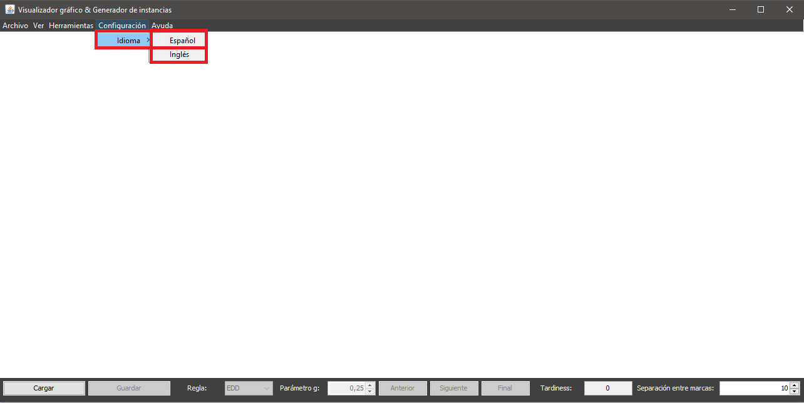

Para cambiar el idioma de la aplicación no es necesario que se dé ninguna condición específica y puede hacerse a través de la opción de menó Herramientas > Idioma y después seleccionar uno de los idiomas disponibles. El cambio de idioma afecta a todas las ventanas abiertas en ese momento.
Es importante destacar que cambiar el idioma de la aplicación reiniciará cualquier planificación manual en curso.